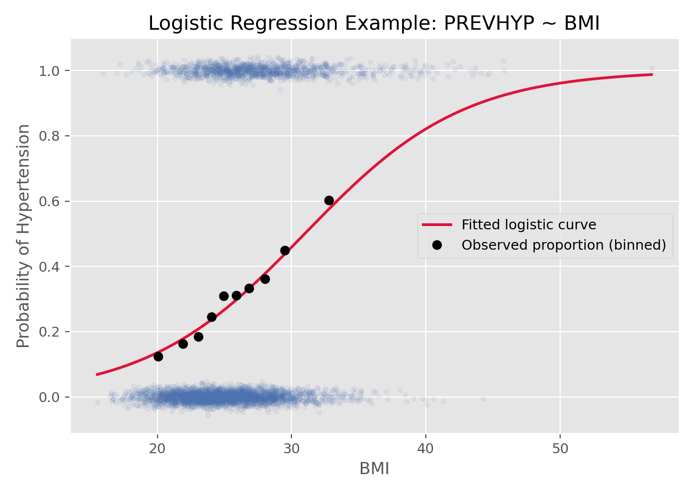

回归与广义线性模型 · 03·03
Logistic回归
Logistic Regression
Logistic回归（Logistic Regression）
§1
方法概览
1.1 定义
Logistic 回归是最经典的二分类结局回归模型，用 logit 连接函数把事件概率映射到线性预测子上，从而估计协变量与事件发生 odds 的关系。
1.2 它主要解决什么问题
- 研究问题：某些协变量如何影响一个二元结局发生的概率。
- 适用任务：风险建模、分类预测、OR 估计、分组二元结局分析。
- 常见医学场景：是否患病、是否高血压、是否复发、是否出现不良事件。
1.3 直觉理解
Logistic 回归不是直接拟合概率，而是先拟合“事件发生的对数优势（log-odds）”。这样可以保证最终预测概率始终落在 0 到 1 之间。
§2
数学形式
2.1 核心公式
$$ \begin{aligned} Y_i &\sim \mathrm{Bernoulli}(\pi_i) \\ \operatorname{logit}(\pi_i) &= \log\frac{\pi_i}{1-\pi_i} = \mathbf{X}_i^\top \boldsymbol{\beta} \\ \pi_i &= \frac{\exp(\mathbf{X}_i^\top \boldsymbol{\beta})}{1+\exp(\mathbf{X}_i^\top \boldsymbol{\beta})} \end{aligned} $$
2.2 参数或统计量含义
- $\pi_i$：第 $i$ 个个体发生事件的概率。
- $\beta_j$：协变量在 log-odds 尺度上的效应。
- $\exp(\beta_j)$：在其他变量固定时，协变量每增加 1 单位对应的 odds ratio。
2.3 关键假设
- 观测独立。
- 结局为二分类。
- logit 尺度上均值模型正确。
- 连续协变量与 logit 概率之间的关系近似线性，或已做合适变换。
§3
数据形式与输入输出
3.1 适合的数据形式
- 自变量类型：连续、二分类、多分类都可。
- 因变量类型：二分类。
- 数据结构：个体级二元数据或 grouped binomial 数据。
- 是否适合高维数据：可以，但高维时常结合正则化。
- 是否适合缺失较多数据：可以，但需先明确缺失处理策略。
- 是否适合删失数据：不适合；删失应转向生存模型。
- 是否适合重复测量数据：普通 Logistic 回归不适合，应考虑 GLMM 或 GEE。
3.2 示例表格
以 Framingham_data.csv 基线样本为例，可以把 PREVHYP 作为二分类结局，把 BMI、SEX、AGE_group 作为协变量：
| RANDID | SEX | AGE_group | BMI | PREVHYP | TOTCHOL |
|---|---|---|---|---|---|
| 2448 | 0 | 1 | 26.97 | 0 | 195.0 |
| 6238 | 1 | 1 | 28.73 | 0 | 250.0 |
| 9428 | 0 | 1 | 25.34 | 0 | 245.0 |
| 10552 | 1 | 2 | 28.58 | 1 | 225.0 |
| 11252 | 1 | 1 | 23.10 | 0 | 285.0 |
3.3 输入与产出
输入
- 输入数据：二分类结局和协变量矩阵。
- 关键变量：结局编码、协变量、交互项、分组变量。
- 需要预处理的内容：缺失处理、分类变量编码、必要时标准化。
产出
- 模型对象/统计结果：系数估计、标准误、Wald 检验、似然比检验。
- 参数估计：log-odds 系数和 OR。
- 预测结果：个体事件概率。
- 不确定性指标：标准误、OR 的区间、预测概率区间。
§4
适用场景
- 适合：二元疾病结局、不良事件发生、风险预测。
- 不适合：计数结局、重复测量二元结局、删失结局。
- 使用前需要特别检查的点：类别不平衡、线性 logit 假设、共线性、完美分离。
§5
实现
常用包：
scikit-learnstatsmodels
import pandas as pd
from sklearn.linear_model import LogisticRegression
df = pd.read_csv("Framingham_data.csv")
df = df[df["PERIOD"] == 1][["BMI", "SEX", "PREVHYP"]].dropna()
X = df[["BMI", "SEX"]]
y = df["PREVHYP"].astype(int)
fit = LogisticRegression(max_iter=1000)
fit.fit(X, y)
print("intercept:", fit.intercept_)
print("coef:", fit.coef_)
print("predicted probabilities:", fit.predict_proba(X.head())[:, 1])
常用包：
stats
df <- subset(df, PERIOD == 1, select = c(BMI, SEX, PREVHYP))
df <- na.omit(df)
fit <- glm(PREVHYP ~ BMI + SEX, family = binomial(link = "logit"), data = df)
summary(fit)
exp(coef(fit)) # odds ratios
exp(confint(fit)) # CI of odds ratios
§6
结果如何解释
- 核心结果看什么：系数方向、OR、预测概率。
- 每个主要参数如何解释：例如 $\exp(\beta_{\mathrm{BMI}})=1.10$ 可解释为 BMI 每增加 1 单位，高血压 odds 增加 10%。
- 临床或医学意义如何表达：OR 应和基线风险、预测概率一起解释。
- 常见误读：OR 不是风险比；在高基线风险下，OR 和风险比会差很多。
§7
推荐可视化
- 预测概率曲线。
- 二元散点 + 平滑拟合曲线。
- OR 森林图。
7.1 图像示例
下图展示高血压状态随 BMI 变化的拟合 Logistic 曲线，以及分箱后的观测比例。

§8
优势、局限与常见坑
优势
- 概率建模自然。
- OR 解释直观。
- 是医学观察性研究和预测模型的核心工具。
局限
- 系数在 log-odds 尺度，不如均值差直观。
- 完全分离、小样本不稳定时会出问题。
- 不处理相关数据。
常见坑
- 把 OR 当成风险比。
- 忽略类别不平衡与阈值选择。
- 不检查连续变量在线性 logit 尺度下是否合理。
§9
与相近方法的区别
- 和线性概率模型的区别：Logistic 保证预测概率落在 0 到 1 内。
- 和条件 Logistic 回归的区别：普通 Logistic 用于独立样本，条件 Logistic 用于匹配数据。
- 和 GLMM / GEE 的区别：后两者用于相关二元数据。
§10
医学研究中的典型应用
- 基线危险因素与高血压状态关系建模。
- 病例-对照研究中的 OR 估计。
- 二元临床结局预测模型。
§11
相关方法
§12
参考资料
- Hosmer DW, Lemeshow S, Sturdivant RX. Applied Logistic Regression. 3rd ed. Wiley; 2013.
- scikit-learn Developers.
sklearn.linear_model.LogisticRegression. scikit-learn API Reference. https://scikit-learn.org/stable/modules/generated/sklearn.linear_model.LogisticRegression.html （访问日期：2026-07-02） - R Core Team.
glm. R Manual. https://stat.ethz.ch/R-manual/R-devel/library/stats/html/glm.html （访问日期：2026-07-02）
— 黑盒词典 · 03·03 —